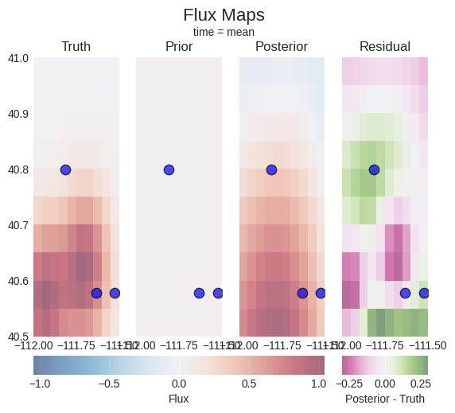
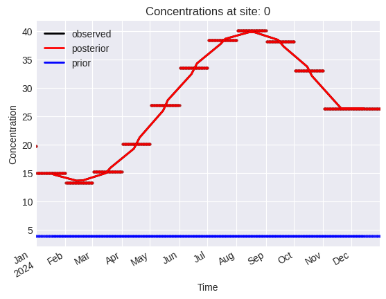
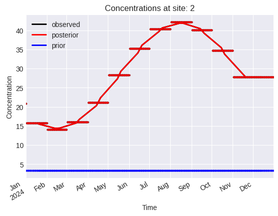
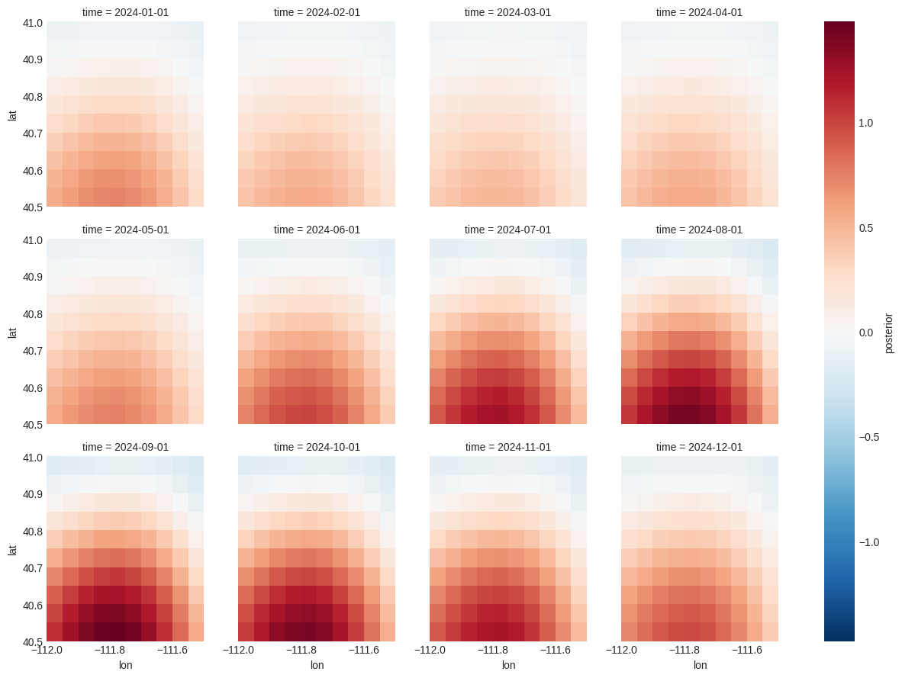

Regional Flux Inversion#
Bayesian Inversion for Regional CH₄ Emissions#
This notebook demonstrates solving a regional atmospheric inverse problem using Bayesian estimation.
Problem Setup#
State (x): Regional CH₄ flux anomalies on a spatial grid [µmol/m²/s]
Observations (z): CH₄ concentration enhancements at observation sites [ppm]
Forward model: z = H @ x (atmospheric transport from fluxes to concentrations)
Approach#
Synthetic Jacobian: Distance-based Gaussian sensitivity (flux → concentration)
Synthetic Truth: Gaussian emission hotspots within domain
Synthetic Observations: Concentrations from truth + noise
Bayesian Estimation: Recover fluxes from noisy concentration measurements
1. Imports#
[1]:
import matplotlib.pyplot as plt
import numpy as np
import pandas as pd
from fips.problems.flux import FluxProblem
# Configure plotting
plt.style.use("seaborn-v0_8-darkgrid")
%matplotlib inline
2. Configuration#
[2]:
# ==============================================================================
# RANDOM SEED
# ==============================================================================
RANDOM_SEED = 42
# ==============================================================================
# DOMAIN CONFIGURATION
# ==============================================================================
# Spatial domain (lat/lon bounds)
XMIN, XMAX = -112.0, -111.5 # longitude [deg]
YMIN, YMAX = 40.5, 41.0 # latitude [deg]
DX, DY = 0.05, 0.05 # grid spacing [deg]
# Time domain
T_START = pd.Timestamp("2024-01-01")
T_STOP = pd.Timestamp("2025-01-01")
STATE_FREQ = "MS" # state frequency
OBS_FREQ = "D" # observation frequency
# ==============================================================================
# OBSERVATION SITES
# ==============================================================================
N_SITES = 3 # number of observation locations
# ==============================================================================
# EMISSION HOTSPOTS (Truth field)
# ==============================================================================
N_HOTSPOTS = 2 # number of Gaussian emission centers
HOTSPOT_AMPLITUDE = 1.0 # peak flux [µmol/m²/s]
HOTSPOT_WIDTH = 0.1 # Gaussian width [deg] (std dev)
# ==============================================================================
# PRIOR CONFIGURATION
# ==============================================================================
PRIOR_MEAN = 0.05 # prior flux mean [µmol/m²/s]
PRIOR_STD_FRACTION = 0.5 # prior uncertainty as fraction of prior mean
# ==============================================================================
# JACOBIAN (SENSITIVITY)
# ==============================================================================
INFLUENCE_RADIUS = 0.3 # Gaussian influence radius [deg]
# ==============================================================================
# OBSERVATION ERROR
# ==============================================================================
OBS_NOISE_STD = 0.001 # observation noise [ppm]
print("Configuration:")
print(f" Domain: [{XMIN}, {XMAX}] × [{YMIN}, {YMAX}] (spacing {DX}°)")
print(f" Time: {T_START} to {T_STOP}")
print(f" Observation sites: {N_SITES}")
print(f" Hotspots: {N_HOTSPOTS} @ {HOTSPOT_AMPLITUDE} µmol/m²/s")
print(f" Prior: {PRIOR_MEAN} ± {PRIOR_MEAN * PRIOR_STD_FRACTION} µmol/m²/s")
Configuration:
Domain: [-112.0, -111.5] × [40.5, 41.0] (spacing 0.05°)
Time: 2024-01-01 00:00:00 to 2025-01-01 00:00:00
Observation sites: 3
Hotspots: 2 @ 1.0 µmol/m²/s
Prior: 0.05 ± 0.025 µmol/m²/s
3. Helper Functions#
[3]:
def build_grid(xmin, xmax, ymin, ymax, dx, dy):
"""
Build spatial grid.
Returns
-------
lons : array
Longitude cell centers
lats : array
Latitude cell centers
"""
lons = np.arange(xmin + dx / 2, xmax, dx)
lats = np.arange(ymin + dy / 2, ymax, dy)
return lons, lats
def build_obs_sites(n_sites, xmin, xmax, ymin, ymax, seed=42):
"""
Generate random observation site locations within domain.
Returns
-------
obs_lons : array
Observation longitude coordinates
obs_lats : array
Observation latitude coordinates
"""
np.random.seed(seed)
obs_lons = np.random.uniform(xmin, xmax, n_sites)
obs_lats = np.random.uniform(ymin, ymax, n_sites)
return obs_lons, obs_lats
def gaussian_2d(x, y, x0, y0, sigma):
"""
Evaluate 2D Gaussian.
Parameters
----------
x, y : array
Coordinates (can be meshgrid)
x0, y0 : float
Gaussian center
sigma : float
Gaussian width
Returns
-------
z : array
Gaussian values
"""
return np.exp(-0.5 * ((x - x0) ** 2 + (y - y0) ** 2) / sigma**2)
def build_truth_field(lons, lats, hotspots, amplitude, width):
"""
Build synthetic truth field from Gaussian hotspots.
Parameters
----------
lons, lats : array
Grid coordinates
hotspots : list of (lon, lat)
Hotspot center locations
amplitude : float
Peak flux amplitude
width : float
Gaussian width
Returns
-------
flux : 2D array
Flux field [n_lon × n_lat]
"""
X, Y = np.meshgrid(lons, lats, indexing="ij")
flux = np.zeros_like(X)
for lon0, lat0 in hotspots:
flux += amplitude * gaussian_2d(X, Y, lon0, lat0, width)
return flux
def build_jacobian(obs_lons, obs_lats, state_lons, state_lats, influence_radius):
"""
Build synthetic Jacobian using distance-based Gaussian sensitivity.
H[i,j] = sensitivity of observation i to flux j
= exp(-0.5 * (distance_ij / influence_radius)^2)
Parameters
----------
obs_lons, obs_lats : array
Observation site coordinates
state_lons, state_lats : array
State grid coordinates
influence_radius : float
Gaussian influence radius
Returns
-------
H : 2D array
Jacobian [n_obs × n_state]
"""
n_obs = len(obs_lons)
n_lon = len(state_lons)
n_lat = len(state_lats)
n_state = n_lon * n_lat
H = np.zeros((n_obs, n_state))
idx = 0
for i_lon in range(n_lon):
for i_lat in range(n_lat):
state_lon = state_lons[i_lon]
state_lat = state_lats[i_lat]
for i_obs in range(n_obs):
# Great-circle distance (simplified for small distances)
dlon = obs_lons[i_obs] - state_lon
dlat = obs_lats[i_obs] - state_lat
distance = np.sqrt(dlon**2 + dlat**2)
# Gaussian sensitivity
H[i_obs, idx] = np.exp(-0.5 * (distance / influence_radius) ** 2)
idx += 1
return H
print("Helper functions loaded.")
Helper functions loaded.
4. Build Domain and Observation Network#
[4]:
# Build grid
lons, lats = build_grid(XMIN, XMAX, YMIN, YMAX, DX, DY)
X_grid, Y_grid = np.meshgrid(lons, lats, indexing="ij")
n_lon = len(lons)
n_lat = len(lats)
n_state_spatial = n_lon * n_lat
print(f"Spatial grid: {n_lon} × {n_lat} = {n_state_spatial} cells")
# Generate observation sites
obs_lons, obs_lats = build_obs_sites(N_SITES, XMIN, XMAX, YMIN, YMAX, seed=RANDOM_SEED)
location_mapper = {}
print(f"Observation sites: {N_SITES}")
for i, (lon, lat) in enumerate(zip(obs_lons, obs_lats, strict=False)):
print(f" Site {i}: ({lon:.3f}, {lat:.3f})")
location_mapper[i] = (lat, lon)
# Generate hotspot locations
np.random.seed(RANDOM_SEED + 1)
hotspot_lons = np.random.uniform(XMIN, XMAX, N_HOTSPOTS)
hotspot_lats = np.random.uniform(YMIN, YMAX, N_HOTSPOTS)
hotspots = list(zip(hotspot_lons, hotspot_lats, strict=False))
print(f"Hotspots: {N_HOTSPOTS}")
for i, (lon, lat) in enumerate(hotspots):
print(f" Hotspot {i}: ({lon:.3f}, {lat:.3f})")
Spatial grid: 10 × 10 = 100 cells
Observation sites: 3
Site 0: (-111.813, 40.799)
Site 1: (-111.525, 40.578)
Site 2: (-111.634, 40.578)
Hotspots: 2
Hotspot 0: (-111.942, 40.567)
Hotspot 1: (-111.695, 40.620)
5. Build Time Grids#
[5]:
# State time bins (fluxes)
state_times = pd.date_range(
start=T_START, end=T_STOP, freq=STATE_FREQ, inclusive="left"
)
n_time_state = len(state_times)
# Observation time bins
obs_times = pd.date_range(start=T_START, end=T_STOP, freq=OBS_FREQ, inclusive="left")
n_time_obs = len(obs_times)
print(f"State time bins: {n_time_state}")
for t in state_times:
print(f" {t}")
print(f"\nObservation times: {n_time_obs}")
print(f" {obs_times[0]} to {obs_times[-1]}")
State time bins: 12
2024-01-01 00:00:00
2024-02-01 00:00:00
2024-03-01 00:00:00
2024-04-01 00:00:00
2024-05-01 00:00:00
2024-06-01 00:00:00
2024-07-01 00:00:00
2024-08-01 00:00:00
2024-09-01 00:00:00
2024-10-01 00:00:00
2024-11-01 00:00:00
2024-12-01 00:00:00
Observation times: 366
2024-01-01 00:00:00 to 2024-12-31 00:00:00
6. Build Jacobian#
[6]:
print("Building Jacobian...")
H = build_jacobian(obs_lons, obs_lats, lons, lats, INFLUENCE_RADIUS)
print(f"Jacobian shape: {H.shape}")
print(f" Range: [{H.min():.4f}, {H.max():.4f}]")
print(f" Mean sensitivity: {H.mean():.4f}")
Building Jacobian...
Jacobian shape: (3, 100)
Range: [0.1350, 0.9999]
Mean sensitivity: 0.6698
7. Generate Synthetic Truth and Observations#
[7]:
# Build truth field with seasonal cycle
print("Building truth field with seasonal cycle...")
truth_2d = build_truth_field(lons, lats, hotspots, HOTSPOT_AMPLITUDE, HOTSPOT_WIDTH)
# Create time-varying truth with seasonal cycle
# Amplitude varies from 0.5x to 1.5x the base, peaking in summer (day ~180)
truth_3d = np.zeros((n_lon, n_lat, n_time_state))
for t_idx, t in enumerate(state_times):
# Seasonal cycle: sinusoid with peak in summer
# day_of_year: 0-365, peak amplitude at day ~180 (June-July)
day_of_year = t.dayofyear
seasonal_factor = 1.0 + 0.5 * np.sin(2 * np.pi * (day_of_year - 152) / 365.25)
truth_3d[:, :, t_idx] = seasonal_factor * truth_2d
# Reshape to flat vector in the correct order: iterate over lon, lat, then time
truth_data = truth_3d.reshape(-1)
# Create state index to match this ordering
state_index = pd.MultiIndex.from_product(
[lons, lats, state_times], names=["lon", "lat", "time"]
)
truth_series = pd.Series(truth_data, index=state_index, name="truth")
print(f"Truth field: mean={truth_series.mean():.4f}, max={truth_series.max():.4f}")
print(f" Seasonal range: {truth_series.min():.4f} to {truth_series.max():.4f}")
# Prior (uniform, independent of season)
prior_series = pd.Series(PRIOR_MEAN, index=state_index, name="flux")
print(f"Prior field: {prior_series.mean():.4f} ± {PRIOR_MEAN * PRIOR_STD_FRACTION:.4f}")
Building truth field with seasonal cycle...
Truth field: mean=0.3525, max=1.5691
Seasonal range: 0.0001 to 1.5691
Prior field: 0.0500 ± 0.0250
8. Generate Synthetic Observations#
[8]:
print("Generating synthetic observations...")
# For each observation time, compute concentrations from time-varying fluxes
syn_obs_data = []
syn_obs_index = []
for t_obs in obs_times:
# Find nearest state time
idx = np.searchsorted(state_times, t_obs, side="left")
if idx >= n_time_state:
idx = n_time_state - 1
# Extract truth for this time step from the 3D array
state_flat = truth_3d[:, :, idx].ravel()
# Compute concentrations
conc = H @ state_flat
# Add noise
noise = np.random.normal(0, OBS_NOISE_STD, N_SITES)
conc_noisy = conc + noise
syn_obs_data.extend(conc_noisy)
for i_site in range(N_SITES):
syn_obs_index.append((i_site, t_obs))
obs_index = pd.MultiIndex.from_tuples(syn_obs_index, names=["site_idx", "time"])
syn_obs = pd.Series(syn_obs_data, index=obs_index, name="concentration")
print(f"Observations: {len(syn_obs)}")
print(f" Range: [{syn_obs.min():.6f}, {syn_obs.max():.6f}]")
print(f" Mean: {syn_obs.mean():.6f}")
Generating synthetic observations...
Observations: 1098
Range: [11.480887, 42.115867]
Mean: 26.427648
9. Setup Inverse Problem#
[9]:
print("Setting up flux inversion problem...")
# Prior covariance (diagonal)
prior_std = PRIOR_MEAN * PRIOR_STD_FRACTION
S_0 = pd.DataFrame(
np.diag((prior_std**2) * np.ones(len(prior_series))),
index=state_index,
columns=state_index,
)
# Observation covariance (diagonal)
S_z = pd.DataFrame(
np.diag((OBS_NOISE_STD**2) * np.ones(len(syn_obs))),
index=obs_index,
columns=obs_index,
)
# Forward operator: map state (lon, lat, time_state) to obs (site, time_obs)
# The state_index is organized as: (lon[0], lat[0], t[0]), (lon[0], lat[0], t[1]), ...,
# (lon[0], lat[1], t[0]), (lon[0], lat[1], t[1]), ...
# So for each observation at time t_obs, we need to find all spatial cells at the corresponding state time
H_full = np.zeros((len(syn_obs), len(prior_series)))
obs_row = 0
for t_obs in obs_times:
# Find corresponding state time index
state_time_idx = np.searchsorted(state_times, t_obs, side="left")
if state_time_idx >= n_time_state:
state_time_idx = n_time_state - 1
# For each observation site at this time
for site_idx in range(N_SITES):
# Fill in Jacobian row for all spatial locations
for lon_idx in range(n_lon):
for lat_idx in range(n_lat):
spatial_idx = lon_idx * n_lat + lat_idx
col_pos = spatial_idx * n_time_state + state_time_idx
H_full[obs_row, col_pos] = H[site_idx, spatial_idx]
obs_row += 1
H_mat = pd.DataFrame(H_full, index=obs_index, columns=state_index)
# Create flux inversion problem
# The prepare functions will handle conversion of pandas objects to Vector/Matrix types
problem = FluxProblem(
obs=syn_obs,
prior=prior_series,
forward_operator=H_mat,
prior_error=S_0,
modeldata_mismatch=S_z,
)
print("Flux inversion problem configured.")
print(f" State dimension: {len(prior_series)}")
print(f" Observation dimension: {len(syn_obs)}")
print(f" Jacobian shape: {H_full.shape}")
Setting up flux inversion problem...
Flux inversion problem configured.
State dimension: 1200
Observation dimension: 1098
Jacobian shape: (1098, 1200)
10. Solve#
[10]:
print("Solving...")
problem.solve(estimator="bayesian")
print("✓ Solution complete")
Solving...
✓ Solution complete
[11]:
problem.obs
[11]:
Vector(name='None', shape=(1098,))
block site_idx time
concentration 0 2024-01-01 19.783718
1 2024-01-01 17.022029
2 2024-01-01 20.813514
0 2024-01-02 14.939326
1 2024-01-02 12.854288
...
2024-12-30 22.693028
2 2024-12-30 27.748752
0 2024-12-31 26.374392
1 2024-12-31 22.694512
2 2024-12-31 27.747134
Name: None, Length: 1098, dtype: float64
11. Diagnostics#
[12]:
# Extract results
x_post = problem.posterior.data.values
z_obs_vals = problem.obs.data.values
z_post = problem.posterior_obs.data.values
z_prior = problem.prior_obs.data.values
# Posterior state diagnostics
print("POSTERIOR STATE (FLUX)")
print(f" Mean: {x_post.mean():.4f} µmol/m²/s")
print(f" Std: {x_post.std():.4f} µmol/m²/s")
print(f" Range: [{x_post.min():.4f}, {x_post.max():.4f}]")
# Observation fit
print("\nOBSERVATION FIT")
print(f" RMSE: {problem.estimator.RMSE:.6e} ppm")
print(f" R²: {problem.estimator.R2:.4f}")
residuals = z_obs_vals - z_post
print(f" Max residual: {np.abs(residuals).max():.6e} ppm")
# Uncertainty reduction
prior_std_full = np.sqrt(np.diag(problem.prior_error.values))
post_std_full = np.sqrt(np.diag(problem.posterior_error.values))
reduction = (1 - post_std_full / prior_std_full) * 100
print("\nUNCERTAINTY REDUCTION")
print(f" Mean: {reduction.mean():.1f}%")
print(f" Range: [{reduction.min():.1f}%, {reduction.max():.1f}%]")
# Information content
print("\nINFORMATION CONTENT")
print(f" DOFS: {problem.estimator.DOFS:.1f}")
print(f" Reduced χ²: {problem.estimator.reduced_chi2:.3f}")
POSTERIOR STATE (FLUX)
Mean: 0.3492 µmol/m²/s
Std: 0.3724 µmol/m²/s
Range: [-0.2208, 1.4783]
OBSERVATION FIT
RMSE: 1.017315e-03 ppm
R²: 1.0000
Max residual: 5.317285e-03 ppm
UNCERTAINTY REDUCTION
Mean: 1.5%
Range: [0.7%, 3.2%]
INFORMATION CONTENT
DOFS: 36.0
Reduced χ²: 400.136
12. Visualization#
[13]:
problem.plot.fluxes(truth=truth_series, sites=location_mapper)
[13]:
(<Figure size 640x480 with 6 Axes>,
array([<Axes: title={'center': 'Truth'}>,
<Axes: title={'center': 'Prior'}>,
<Axes: title={'center': 'Posterior'}>,
<Axes: title={'center': 'Residual'}>], dtype=object))

[14]:
problem.plot.concentrations(location_dim="site_idx")


[14]:
array([<Axes: title={'center': 'Concentrations at site: 0'}, xlabel='Time', ylabel='Concentration'>,
<Axes: title={'center': 'Concentrations at site: 1'}, xlabel='Time', ylabel='Concentration'>,
<Axes: title={'center': 'Concentrations at site: 2'}, xlabel='Time', ylabel='Concentration'>],
dtype=object)
[15]:
problem.posterior["flux"].to_xarray().plot(x="lon", y="lat", col="time", col_wrap=4)
[15]:
<xarray.plot.facetgrid.FacetGrid at 0x1471f84cd090>
